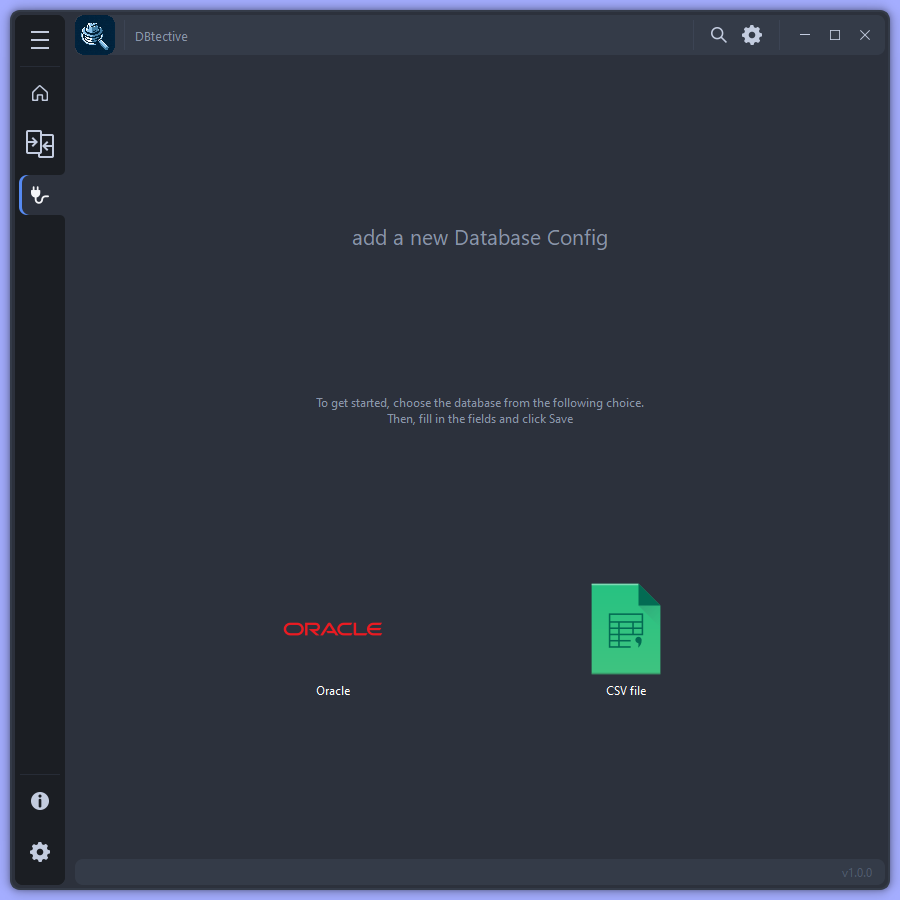

Créer une nouvelle connexion

Configuration des paramètres de connexion
Pour toutes les connexions :
Paramètres |
Description |
|---|---|
Créer une nouvelle connexion |
Tester la connexion : Cliquer sur Tester la connexion pour vérifier si la connexion fonctionne |
Sauvegarder |
Enregistrer. Cliquer sur Enregistrer pour faire apparaître la connexion dans les choix de la base de données |
Nom de la connexion |
Attribuer un nom spécifique à la connexion pour une identification plus facile |
Paramètres de connexion Oracle
Paramètres |
Description |
|---|---|
Hôte |
Adresse IP ou nom de l’hôte |
Port |
Le numéro de port pour la connexion (1521 par défaut) |
Base de données |
Le nom de la base de données spécifique à laquelle vous souhaitez vous connecter |
Nom d’utilisateur et mot de passe |
Les informations d’identification requises pour l’authentification |
Paramètres de connexion CSV
Glisser-déposer ou parcourer les fichiers
Extensions autorisées : cs
Pour chaque fichier, une analyse structurelle est effectuée afin de garantir que son contenu est bien structuré en tableau (en-tête, séparateur, etc.). Si au moins un fichier est incorrect (extension incorrecte ou contenu incohérent), ce fichier sera ignoré et une alerte s’affichera à l’écran.